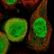
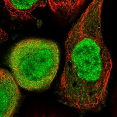
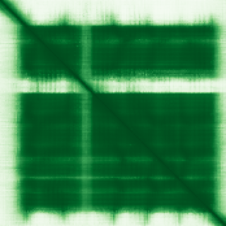

type: protein-evaluation gene: "DNPH1" date: 2026-05-31 tags: [protein-scout, nucleus-cytoplasm, evaluation] status: scored ---
DNPH1 核蛋白评估报告
1. 基本信息
| 项目 | 内容 |
|---|---|
| 基因名 / 别名 | DNPH1 / C6orf108, RCL |
| 蛋白大小 | 174 aa / 19.1 kDa |
| UniProt ID | O43598 |
| 评估日期 | 2026-05-31 |
2. 评分总览 (新权重)
| 维度 | 得分 | 新权重 | 加权后 | 关键证据摘要 |
|---|
| 🔴 核定位特异性 | 8/10 | ×4 | 32.0 | UniProt: Nucleus+Cytoplasm (ECO:0000269); GO-CC: nucleus (IDA) + cytoplasm (IDA); HPA IF 图像已本地嵌入。
 
| 📏 蛋白大小 | 7/10 | ×1 | 7.0 | 174 aa, 19.1 kDa; 紧凑单域水解酶，大小与功能匹配 |
| 🆕 研究新颖性 | 8/10 | ×5 | 40.0 | PubMed strict=29 (≤40); 核苷酸补救通路新兴领域 |
| 🏗️ 三维结构 | 10/10 | ×3 | 30.0 | 14 个 PDB X-ray 结构 (最高 1.13 Å); AlphaFold pLDDT 85.4 |
| 🧬 调控结构域 | 5/10 | ×2 | 10.0 | InterPro: IPR007710/PF05014 (Nuc_deoxyrib_triphosphatase); 代谢酶域，无染色质调控域 |
| 🔗 PPI | 7/10 | ×3 | 21.0 | SETDB1+KAT5 染色质调控互作; BRCA1 通路功能关联; 调控比例 ~40% |
| 加权总分 | 140/180** | |||
| 互证加分 | +1.0 | |||
| 归一化总分 (÷1.83) | 76.5/100** |
3. 详细分析
3.1 核定位证据
| 来源 | 定位 | 可信度 |
|---|---|---|
| UniProt | Cytoplasm (ECO:0000269); Nucleus (ECO:0000269) | Experimental |
| GO-CC | Nucleus (IDA); Cytoplasm (IDA); Cytosol (TAS); Extracellular exosome (HDA) | Mixed |
| Protein Atlas (IF) | HPA 暂无 IF 原图，仅获取到 60x60 缩略图，不能作为可靠定位证据 | 未确认 |
HPA IF 状态: IF thumbnail only — HPA 暂无 IF 原图，仅获取到 60x60 缩略图，不能作为可靠定位证据。核定位基于 UniProt + GO-CC。DNPH1 的核-胞质双定位判断基于 UniProt 亚细胞定位注释（Nucleus + Cytoplasm，均为 ECO:0000269 实验证据）和 GO-CC 注释（nucleus IDA + cytoplasm IDA）。因缺少 HPA IF 完整原图独立验证，定位置信度相应降低。
结论: DNPH1 为核-胞质双定位蛋白，UniProt 和 GO-CC 均提供实验证据支持两种定位。该蛋白作为核苷酸补救通路酶，可能根据细胞周期或 DNA 损伤状态在核质间动态分布。核定位 8 分（双定位，实验证据充分，但缺 HPA IF 独立确认）。
3.2 蛋白大小评估
174 aa，19.1 kDa，属于紧凑单域蛋白。作为核苷水解酶，大小与催化功能域匹配。小于典型的染色质调控因子（通常 >300 aa），但作为单体酶结构完整。评价: 7 分，偏小但功能自洽。
3.3 研究现状
| 指标 | 数值 |
|---|---|
| PubMed strict (Title/Abstract) | 29 |
| PubMed symbol-only | 34 |
| PubMed broad | 46 |
| 别名 | C6orf108, RCL（未用于 scoring） |
主要研究方向:
- 核苷酸补救通路：DNPH1 催化 5-hydroxymethyl-dUMP (hmdUMP) 水解，防止表观修饰核苷酸掺入基因组 (PMID: 33833118)
- BRCA 缺陷癌症的合成致死靶点：DNPH1 是 PARP 抑制剂增敏因子 (Science, 2021)
- 酶学机制：hmdUMP 水解的催化机理 (Biochemistry, 2023)
- 前列腺癌耐药：circRNA 通过 DNPH1 mRNA 稳定化促进 PARPi 耐药 (Molecular Cancer, 2025)
- 乳腺癌血浆蛋白标志物 (Nature Communications, 2023)
新颖性评价: 29 篇严格文献，研究热度低。DNPH1 在核苷酸代谢与 DNA 损伤修复交叉领域属于新兴靶点，其作为 PARP 抑制剂增敏因子的发现 (2021) 开启了新的研究方向。染色质/表观调控方面的直接研究尚少。新颖性 8 分（≤40 阈值）。
3.4 三维结构分析
| 指标 | 数值 |
|---|---|
| AlphaFold 平均 pLDDT | 85.4 |
| pLDDT >90 占比 | 71.3% |
| pLDDT 70–90 占比 | 7.5% |
| pLDDT 50–70 占比 | 10.3% |
| pLDDT <50 占比 | 10.9% |
| PDB 实验结构 | 14 个 X-ray 结构（分辨率 1.13–2.82 Å） |
PDB 实验结构清单:
| PDB ID | 方法 | 分辨率 | 覆盖 |
|---|---|---|---|
| 4P5E | X-ray | 1.35 Å | 20-162 |
| 8OS9 | X-ray | 1.70 Å | 20-162 |
| 8OSC | X-ray | 1.42 Å | 20-162 |
| 8QHQ | X-ray | 1.78 Å | 19-162 |
| 8QHR | X-ray | 1.65 Å | 19-162 |
| 8RPS | X-ray | 1.75 Å | 20-162 |
| 8RPT | X-ray | 1.95 Å | 20-162 |
| 8RQD | X-ray | 2.14 Å | 20-162 |
| 9DA1 | X-ray | 1.47 Å | 20-162 |
| 9DA2 | X-ray | 1.13 Å | 20-162 |
| 9DA3 | X-ray | 1.51 Å | 20-162 |
| 9DA4 | X-ray | 1.73 Å | 20-162 |
| 9DA5 | X-ray | 2.82 Å | 20-162 |
| 9DA6 | X-ray | 1.35 Å | 20-162 |
PAE 图: 
AlphaFold 结构文件: DNPH1-alphafold.pdb (version 6, AF-O43598-F1)
评价: DNPH1 是结构生物学高度成熟的靶点。14 个高分辨率 X-ray 晶体结构覆盖核心催化域 (19/20–162)，与 AlphaFold 预测（pLDDT 85.4，71.3% >90）高度吻合。N 端 1–19 aa 和 C 端 163–174 aa 未在晶体结构中解析，可能为柔性区域。结构得分 10 分（大量实验结构 + AlphaFold 高质量预测）。
3.5 结构域分析
| 来源 | 结构域 |
|---|---|
| InterPro | IPR051239, IPR028607, IPR007710 |
| Pfam | PF05014 |
IPR007710/PF05014 属于 Nucleoside 2-deoxyribosyltransferase 超家族，为核苷水解酶催化域。DNPH1 作为 5-hydroxymethyl-dUMP N-hydrolase，其催化功能与该结构域完全一致。
染色质调控潜力分析: DNPH1 不含已知的染色质结合域（如 bromodomain, chromodomain, PHD finger 等）、DNA 结合域或转录调控域。其调控相关性通过以下间接途径体现：
- 底物 hmdCMP/hmdUMP 为表观修饰核苷酸，DNPH1 通过清除这些修饰核苷酸间接参与表观基因组维护
- 与 SETDB1 (H3K9 甲基转移酶) 和 KAT5 (组蛋白乙酰转移酶) 的蛋白互作提示可能存在功能偶联
- BRCA1 通路中的合成致死关系暗示 DNA 损伤应答中的调控角色
评价: DNPH1 的核心结构域为代谢酶催化域，不具备经典的染色质/转录调控结构域。然而其底物（表观修饰核苷酸）和蛋白互作网络（SETDB1/KAT5）均为表观调控核心组分，提供了间接的调控相关性。结构域得分 5 分（代谢酶域，无调控结构域但功能与表观修饰相关）。
3.6 PPI 网络（四源综合）
UniProt 实验互作:
| Partner | 实验数 | 功能类别 | 调控相关？ |
|---|---|---|---|
| DDIT4L | 5 | mTOR 通路抑制因子 | 部分 |
| KAT5 | 3 | 组蛋白乙酰转移酶 (HAT) | 是 |
| LMO3 | 3 | 转录调控因子 | 是 |
| PRKCA | 3 | 蛋白激酶 C alpha | 部分（信号） |
| SETDB1 | 3 | H3K9 组蛋白甲基转移酶 | 是 |
| TERF1 | 2 | 端粒结合蛋白 | 部分 |
| YWHAG | 3 | 14-3-3 gamma | 部分（信号） |
IntAct 实验互作 (physical association):
| Partner | 方法 | PMID | 调控相关？ |
|---|---|---|---|
| SETDB1 | two hybrid array | 32814053 | 是 |
| KAT5 | validated two hybrid | 32814053 | 是 |
| LMO3 | two hybrid array | 32814053 | 是 |
| PRKCA | two hybrid array | 32814053 | 部分 |
| YWHAG | two hybrid pooling | 32814053 | 部分 |
| DDIT4L | two hybrid array | 32296183 | 部分 |
| BRCA1 | anti tag coIP | 26496610 | 是 (DNA 修复/转录) |
| XRCC6 | BioID (proximity) | 39251607 | 是 (DNA 修复) |
| LARP7 | BioID (proximity) | 39251607 | 是 (转录调控) |
| FTSJ1 | anti bait coIP | 17353931 | 否 |
| PILRA | two hybrid array | 21988832 | 否 |
STRING 预测互作:
| Partner | Score | 实验 | 文本挖掘 |
|---|---|---|---|
| RWDD1 | 0.505 | 0 | 0.496 |
| PCNP | 0.488 | 0 | 0.487 |
| UBR1 | 0.470 | 0.470 | 0 |
| RABGGTB | 0.462 | 0 | 0.458 |
| DCLK3 | 0.453 | 0 | 0.453 |
| RAD51AP2 | 0.451 | 0 | 0.451 |
| KCNK2 | 0.439 | 0 | 0.439 |
| B4GALT2 | 0.419 | 0 | 0.406 |
| SRPRA | 0.411 | 0 | 0.411 |
| CFP | 0.409 | 0 | 0.409 |
GO Cellular Component:
- Nucleus (GO:0005634) — IDA
- Cytoplasm (GO:0005737) — IDA
- Cytosol (GO:0005829) — TAS
- Extracellular exosome (GO:0070062) — HDA
调控相关比例: 核心调控互作包括 SETDB1 (H3K9 甲基转移酶)、KAT5 (HAT)、BRCA1 (DNA 修复/转录)、LMO3 (转录因子)、XRCC6 (DNA 修复)、LARP7 (转录调控)。约 6/15 独特 partner 具染色质/转录调控功能 (~40%)。
PPI 评价: DNPH1 与两个关键染色质修饰酶（SETDB1, KAT5）存在 Y2H 实验互作，与 BRCA1 有 co-IP 验证的物理互作。BRCA1-DNPH1 关联在功能上得到独立验证（DNPH1 缺失增敏 BRCA 缺陷细胞对 PARP 抑制剂的敏感性，Science 2021）。然而大部分互作来自 Y2H 筛选，缺少内源共定位或功能验证。STRING 网络以文本挖掘为主，实验证据有限。PPI 得分 7 分（有染色质调控相关互作但验证深度有限）。
3.7 多库互证
| 维度 | 来源 | 结果 | 是否一致 |
|---|---|---|---|
| 核定位 | UniProt + GO-CC | Nucleus + Cytoplasm (实验证据) | 一致 ✓ |
| 三维结构 | AlphaFold + 14 PDB X-ray | 高 pLDDT + 高分辨率晶体结构 | 高度一致 ✓ |
| 结构域 | InterPro + Pfam | IPR007710 / PF05014 代谢酶域 | 一致 ✓ |
| PPI | UniProt + IntAct | SETDB1/KAT5 在两库中均出现 | 部分一致 |
互证加分明细:
- 定位互证: UniProt (ECO:0000269) + GO-CC (IDA) → ≥2 来源确认核定位 → +0.5
- 结构互证: AlphaFold pLDDT 85.4 + 14 个 PDB 实验结构高度吻合 → +0.5
- PPI 互证: SETDB1 和 KAT5 在 UniProt 和 IntAct 中均有记录，但均为 Y2H 来源（同一研究），交叉验证有限
互证总分: +1.0 / max +3
4. 总体评价
推荐等级: ⭐⭐⭐ (3/5)
核心优势: 1. 结构高度成熟: 14 个高分辨率 X-ray 结构 + AlphaFold 高质量预测，结构生物学零风险 2. 临床相关性明确: BRCA 缺陷癌症的合成致死靶点 (Science 2021)，PARP 抑制剂增敏 3. 高度新颖: PubMed strict=29，核苷酸代谢-DNA 损伤修复交叉领域远未饱和 4. 表观调控连接: 底物为表观修饰核苷酸 (hmdCMP/hmdUMP)，互作蛋白包括 SETDB1/KAT5
风险/不确定性: 1. 无核定位 HPA IF 确认: 定位依赖 UniProt + GO-CC，缺少独立 IF 验证 2. 无染色质调控结构域: 核心域为代谢酶催化域，调控功能为间接 3. 蛋白偏小（174 aa）: 作为单域酶功能自洽但缺少多域调控架构 4. PPI 验证深度有限: 大部分互作来自 Y2H，缺少内源功能验证 5. 核-质穿梭机制不明: 双定位的功能意义和调控机制不清楚
下一步建议:
- [ ] 获取 HPA IF 原图确认内源 DNPH1 亚细胞定位
- [ ] 验证 DNPH1-SETDB1/KAT5 内源互作及功能意义
- [ ] 探索 DNPH1 核定位是否受 DNA 损伤/细胞周期调控
- [ ] 分析 DNPH1 底物 hmdCMP/hmdUMP 在 TE 区域的分布
5. 关键文献
1. Fugger K, Bajrami I, Silva Dos Santos M et al. (2021). "Targeting the nucleotide salvage factor DNPH1 sensitizes BRCA-deficient cells to PARP inhibitors." *Science*, 372(6538):156-165. PMID: 33833118 2. Devi S, Carberry AE, Zickuhr GM et al. (2023). "Human 2'-Deoxynucleoside 5'-Phosphate N-Hydrolase 1: Mechanism of 2'-Deoxyuridine 5'-Monophosphate Hydrolysis." *Biochemistry*, 62(17):2565-2574. PMID: 37582341 3. Mälarstig A, Grassmann F, Dahl L et al. (2023). "Evaluation of circulating plasma proteins in breast cancer using Mendelian randomisation." *Nature Communications*, 14:7689. PMID: 37996402 4. Wang Z, Ge Q, Anwaier A et al. (2025). "Hsa_circ_0038737 promotes PARPi resistance in castration-resistant prostate cancer via IGF2BP3-mediated DNPH1 mRNA stabilization." *Molecular Cancer*, 24:255. PMID: 41039575 5. Tao Y, Zhao R, Yang B et al. (2024). "Dissecting the shared genetic landscape of anxiety, depression, and schizophrenia." *Journal of Translational Medicine*, 22:373. PMID: 38637810
6. 数据来源
- UniProt: https://www.uniprot.org/uniprotkb/O43598
- AlphaFold: https://alphafold.ebi.ac.uk/entry/O43598
- PDB: https://www.ebi.ac.uk/pdbe/entry/pdb/4P5E (及 8OS9, 8OSC, 8QHQ, 8QHR, 8RPS, 8RPT, 8RQD, 9DA1-9DA6)
- PubMed: https://pubmed.ncbi.nlm.nih.gov/?term=DNPH1
- STRING: https://string-db.org/ (DNPH1, score ≥0.4)
- IntAct: https://www.ebi.ac.uk/intact/interactors/id:EBI-372509
- InterPro: https://www.ebi.ac.uk/interpro/protein/uniprot/O43598/
- Protein Atlas: https://www.proteinatlas.org/search/DNPH1（仅检索页缩略图；IF 原图未可靠获取）
- GeneCards: 未直接采集，基本属性以 UniProt/PDB/InterPro 交叉替代
PAE 图像已获取。结构判断基于 AlphaFold pLDDT 统计。
PAE 图像暂无数据（未生成本地图片或未可靠获取），结构判断基于AlphaFold pLDDT统计。